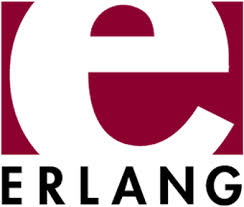
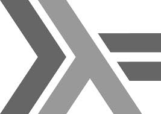

Programowanie
pełnym zdaniem

Przykład pętli nieskończonej
Ala ma kota,
kot ma Alę.

Będzie o programowaniu!

Ale o co chodzi/kodzi???
fall_velocity(Planemo, Distance) ->
Gravity = case Planemo of
earth -> 9.8;
moon -> 1.6;
mars -> 3.71
end,
try math:sqrt(2 * Gravity * Distance) of
Result -> Result
catch
error:Error -> {error, Error}
end.
Erlang
Charakterystyka
- funkcyjny
- deklaratywny
- typowanie dynamiczne
- zastosowania współbieżne
Erlang historia
- lata '80 - poszukiwania języka do telekomunikacji
- 1990 start projektu
- 1994/95 pierwsza wersja
- 1998 open source
- ok. 4 lata temu - zwiększa popularność
Nazwa pochodzi od: Ericsson Lang Agner Krarup Erlang
Ciekawostka
W 1998 roku Ericsson zademonstrował switch AXD301 z oprogramowaniem zawierającym milion linii kodu w Erlangu, który osiągnął wskaźnik niezawodności 99,9999999%, co oznaczało, że w ciągu roku system mógł mieć co najwyżej 3,15 sekundy przestoju spowodowanego awarią.
Wróćmy do kodu...
fall_velocity(Planemo, Distance) ->
Gravity = case Planemo of
earth -> 9.8;
moon -> 1.6;
mars -> 3.71
end,
try math:sqrt(2 * Gravity * Distance) of
Result -> Result
catch
error:Error -> {error, Error}
end.
Rzuć pan belkę do maszyny

Rzuć pan belkę do maszyny.
- moduły w plikach źródłowych (.erl)
- Erlang VM - pliki BEAM (Bodgan’s Erlang Abstract Machine)
- własne wątki
- 1 VM = 1 proces -> ilość wątków = ilość procesorów
DevOps Note: Warte zauważenia Erlang VM wprost na XenCenter: Erlang on XEN
Restarty to przeżytek
1> compile:file(z).
{ok,z}
2> sys:suspend(z).
ok
3> code:purge(z).
false
4> code:load_file(z).
{module,z}
5> sys:change_code(z,z,"0",[]).
ok
6> sys:resume(z).
ok
Po co nam pętle?
Po co nam pętle?
Jest przecież rekurencja.
multi_print(What, 0) ->
done;
multi_print(What, Times) ->
io:format("~p~n", [What]),
multi_print(What, Times - 1).
BTW return też jest zbędny :)
Po co nam zmienne?
Po co nam zmienne?
function fib_iter($n)
{
if($n <= 2){
return 1;
}else{
$a = 1;
$b = 1;
$c = 0;
for($i=0; $i<$n-2; $i++){
$c = $a + $b;
$a = $b;
$b = $c;
}
return $c;
}
}
Źródło: Wikipedia
function fib_rek($n)
{
if($n==0)
{
return 0;
}
if($n==1)
{
return 1;
}
return fib_rek($n-2) + fib_rek($n-1);
}
Źródło: Wikipedia
fib(N) -> fib(N, 0, 1).
fib(0, Result, _) -> Result;
fib(N, Result, Next) -> fib(N - 1, Next, Result + Next).
Źródło: Wikipedia
Pattern matching
1> A = 1.
1
2> B = 1.
1
3> A = B.
1
4> A = 2 - 1.
1
a jednak się da :)
Głowa i ogon
Głowa i ogon
1> Lista = [1,2,3].
[1,2,3]
2> [Head | Tail] = Lista.
[1,2,3]
3> Head.
1
4> Tail.
[2,3]
5> [A,B] = Tail.
[2,3]
6> A.
2
7> B.
3
Koszula bliższa ciału:
list($h,$t) = array(1,2,3);
echo $h; // 1
echo $t; // 2
list(,,$t) = array(1,2,3);
echo $t; // 3
Wykrzycz procesowi,
co chcesz...
1> Pid = self().
<0.32.0>
2> Pid ! komunikat.
...ale nie licz na odwet
1> receive X -> X end.
komunikat
Pozwól się zepsuć,
ale pod nadzorem

Let it crash
Erlang nie jest jedyny
Funkcyjna rodzina
 Scala (może być)
Scala (może być)- F#
- Lisp (
 Clojure, Emacs Lisp)
Clojure, Emacs Lisp) - Haskell